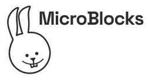

Estos retos tienen como objetivo enseñar a controlar Micro:bit a través del entorno de programación microblocks.
Microblocks tiene grandes ventajas para programar microcontroladores como Micro:bit, estas ventajas se enumeran en https://microblocks.fun/what-is-microblocks.
En este enlace os dejo la documentación de como empezar con microblocks: https://microblocks.fun/get-started.